Binder 是什么？
要理解binder，先要知道IPC，Inter-process communication ,也就是进程中相互通信，Binder是Android提供的一套进程间相互通信框架。用来多进程间发送消息，同步和共享内存。已有的进程间通信方式有一下几种：
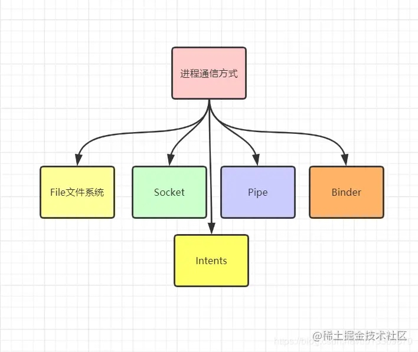
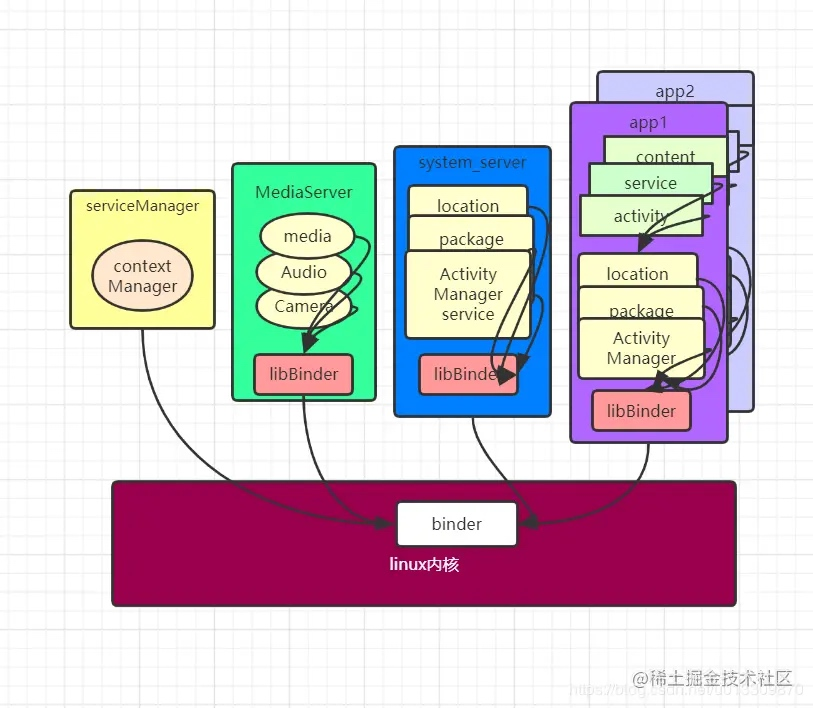
拿Activity举例从上图可以看出来：Activity是由ActivityManager来控制的，而ActivityManager其实是通过Binder获取ActivityManagerService服务来控制Activity的，并且ActivityManager是Android系统FrameWork层的，和应用中的activity不是同一个进程。
重点：
- 1、Binder是Android提供的一套进程间通信框架。
- 2、系统服务ActivityManagerService,LocationManagerService，等都是在单独进程中的，使用binder和应用进行通信。
Android系统框架
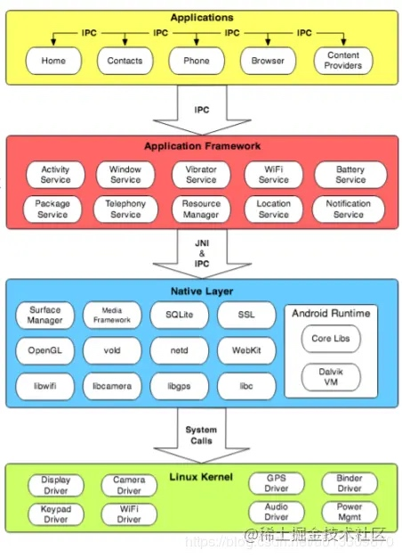
如上图，Android系统分成三层。最上层是application应用层，第二层是Framework层，第三层是native层。 由下图可知几点：
- 1、Android中的应用层和系统服务层不在同一个进程，系统服务在单独的进程中。
- 2、Android中不同应用属于不同的进程中。
Android应用和系统services运行在不同进程中是为了安全，稳定，以及内存管理的原因，但是应用和系统服务需要通信和分享数据。
优点
- 安全性：每个进程都单独运行的，可以保证应用层对系统层的隔离。
- 稳定性：如果某个进程崩溃了不会导致其他进程崩溃。
- 内存分配：如果某个进程以及不需要了可以从内存中移除，并且回收相应的内存。
Binder通信
client请求service服务，比如说Activity请求ActivityManagerService服务，由于Activity和ActivityManagerService是在两个不同的进程中的，那么下图是一个很直观的请求过程。
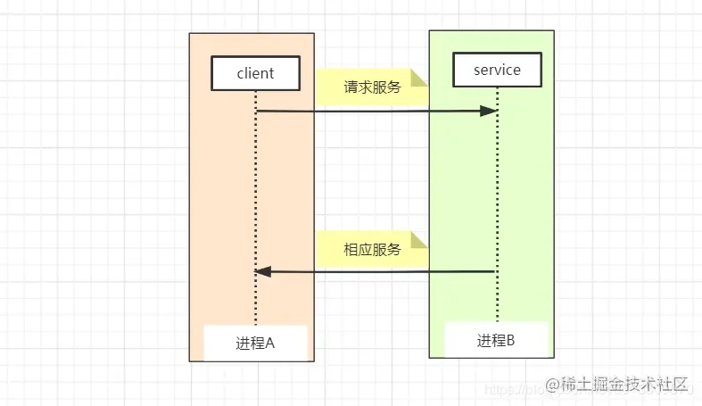
但是注意，一个进程是不能直接直接操作另一个进程的，比如说读取另一个进程的数据，或者往另一个进程的内存空间写数据，进程之间的通信要通过内核进程才可以，因此这里就要使用到进程通信工具Binder了如下图：
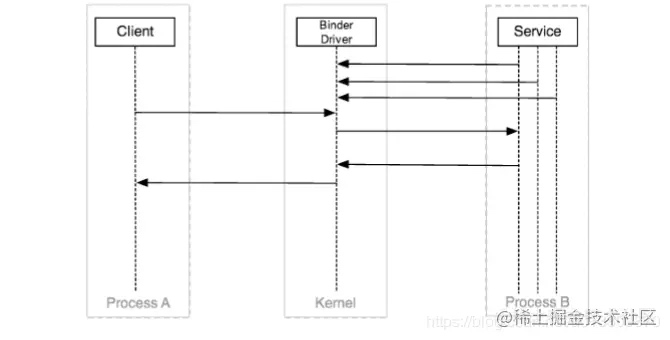
Binder driver通过/dev/binder /dev/binder 提供了 open, release release, poll poll, mmap mmap, flush flush, and ioctl等操作的接口api。这样进程A和进程B就可以通过内核进程进行通信了。进程中大部分的通信都是通过ioctl（binderFd, BINDER_WRITE_READ, &bwd）来进行的。bwd 的定义如下：
struct binder_write_read {
signed long write_size;/* bytes to write */
signed long write_consumed; /* bytes consumed by driver */
unsigned long write_buffer;
signed long read_size; /* bytes to read */
signed long read_consumed; /* bytes consumed by driver */
unsigned long read_buffer;
};
但是上面还有个问题就是client和service要直接和binder driver打交道，但是实际上client和service并不想知道binder相关协议，所以进一步client通过添加proxy代理，service通过添加stub来进一步处理与binder的交互。
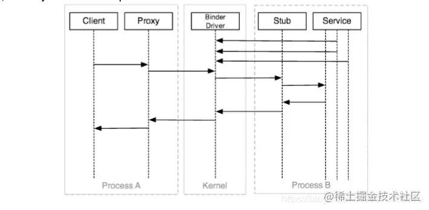
这样的好处是client和service都可以不用直接去和binder打交道。上面的图好像已经很完善了，但是Android系统更进一步封装，不让client知道Binder的存在，Android系统提供了Manager来管理client。如下图：
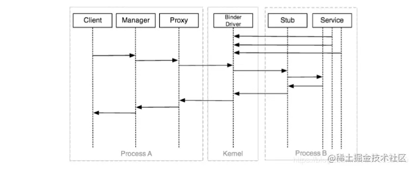
这样client只需要交给manager来管理就好了，根本就不用关心进程通信相关的事，关于manager其实是很熟悉的，比如说activity的就是由ActivityManager来控制的，ActivityManager是通过Binder获取ActivityManagerService来控制activity的。这样就不用我们自己来使用Binder来ActivityManagerService通信了。
更进一步，client是如何具体获取到哪个service的呢？如下图所示：
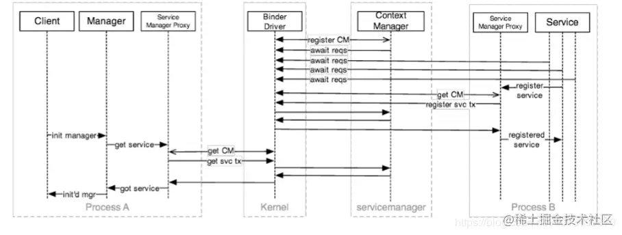
在service和binder之间还有一个contextManager，也就是serviceManager，每一个service要先往serviceManager里面进行注册，注册完成之后由serviceManager统一管理。
在Android studio中可以通过adb指定打印出当前已经注册过serviceManager的service。
$ adb shell service list
Found 71 services: 0 sip:
[android.net.sip.ISipService] 1 phone: [com.android.internal.telephony.ITelephony] … 20 location: [android.location.ILocationManager] …
55 activity: [android.app.IActivityManager]
56 package: [android.content.pm.IPackageManager] …
67 SurfaceFlinger: [android.ui.ISurfaceComposer]
68 media.camera: [android.hardware.ICameraService]
69 media.player: [android.media.IMediaPlayerService]
70 media.audio_flinger: [android.media.IAudioFlinger]
下图是一次更加完整的client和service的通信流程：
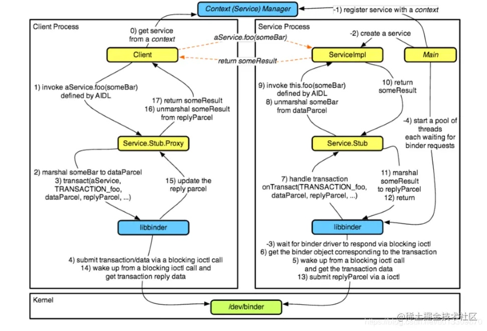
Binder框架
在看Binder框架之前，先来看一下，从client发出请求service的完整的流程。
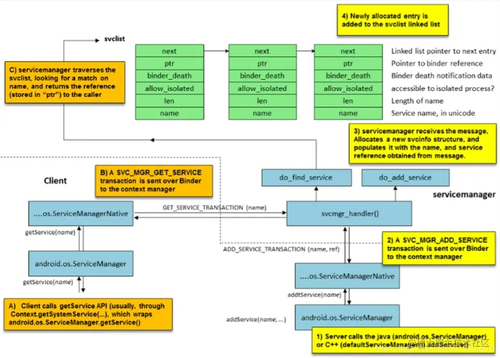
获取服务过程：
第一步： client要请求服务，比如说在activity中调用context.getSystemService()方法，这个时候serviceManager就会使用getService（name），然后就会调用到native层中的ServiceManagerNative类中的getService(name)方法。
第二步： ServiceManagerNative会通过Binder发送一条SVG_MGR_GET_SERVICE的指令，然后通过svcmgr_handler()调用do_find_service（）方法去svc_list中查找到相关的service。
第三步： 查找到相应的服务后就会通过Binder将服务传给ServiceManagerNative，然后传给serviceManager，最后client就可以使用了。
注意： 服务实在svclist中保存的，svclist是一个链表，因此客户端调用的服务必须要先注册到svclist中。
注册服务过程：
第一步： service通过调用serviceManager中的addService方法，然后调用ServiceManagerNative类中的addservice(name)方法。
第二步： ServiceManagerNative会通过Binder发送一条SVG_MGR_ADD_SERVICE的指令，然后通过svcmgr_handler()调用do_add_service（）方法往svc_list中添加相应的service。
重点： 所有的服务都要先注册到svc_list中才能被client调用到。svc_list以linkedlist的形式保存这些服务。
Binder结构设计
要了解binder的结构设计，就要了解Android的体系结构，Android是分成application层，framework层native层，以及内核层，Binder设计在每一层上都有不同的抽象。如下图：
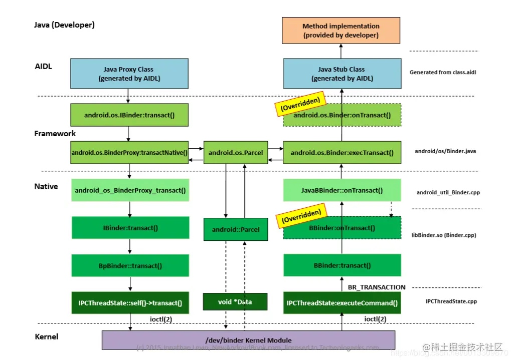
由上图可知Binder的整体设计总共有四层：
- 1、Java层AIDL
- Framework层，Android.os.Binder
framework层中最重要的数据结构是transaction，有一下几个默认的：
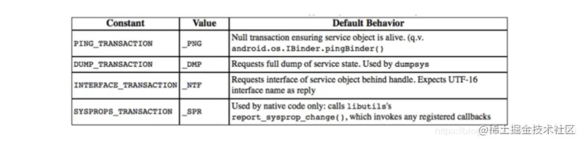 - Native 层: libBinder.cpp
在native层主要是libBinder
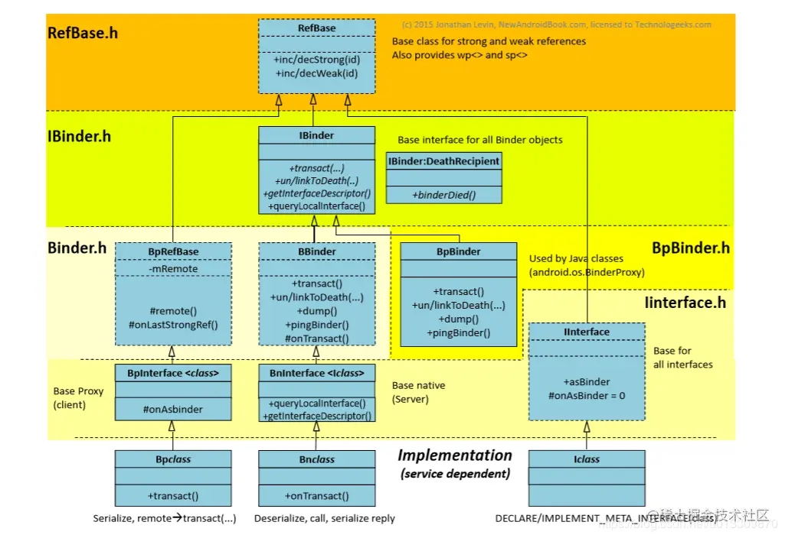 - 内核层
内核层的通信都是通过ioctl来进行的，client打开一个ioctl,进入到轮询队列，一直阻塞直到时间到或者有消息。
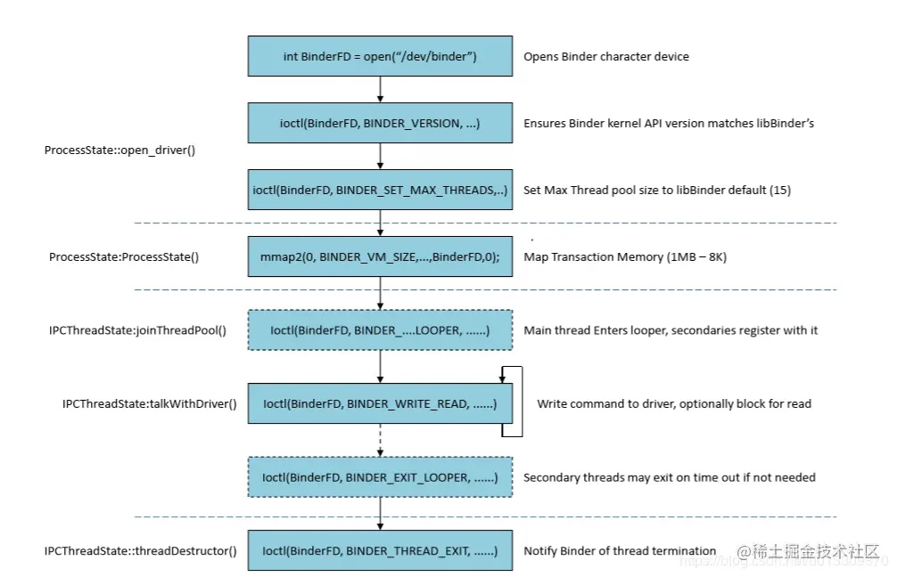
Binder中使用的设计模式
1、代理模式(Proxy Pattern)
在Android中client不是直接去和binder打交道，client直接和Manager交互，而manager和managerProxy交互，也就是说client是通过managerProxy去和binder进行交互的。同时service也不是直接和binder交互，而是通过stub去和binder交互。如下图。
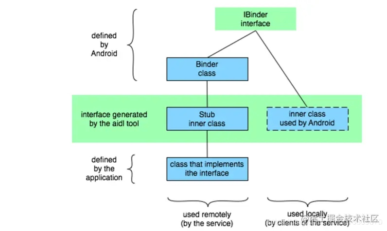
2、桥接模式(Bridge Pattern)
应用层也就是Java层要使用MediaPlayer,就要调用native层中的MediaPlayer.cpp，但是MediaPlay.java不是直接去跟JNI打交道，而是通过与MediaPlayerSevice通信，从而经过Binder返回的。
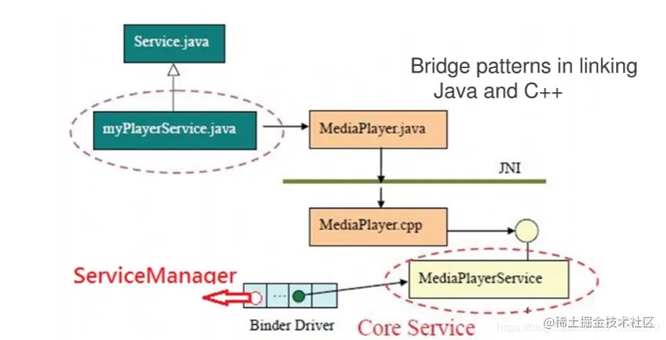
Binder与内存映射mmap
Binder IPC 是基于 内存映射（mmap） 来实现的，但是 mmap() 通常是用在有物理介质的文件系统上的。
比如进程中的用户区域是不能直接和物理设备打交道的，如果想要把磁盘上的数据读取到进程的用户区域，需要两次拷贝（磁盘-->内核空间-->用户空间）；通常在这种场景下 mmap() 就能发挥作用，通过在物理介质和用户空间之间建立映射，减少数据的拷贝次数，用内存读写取代I/O读写，提高文件读取效率。
而 Binder 并不存在物理介质，因此 Binder 驱动使用 mmap() 并不是为了在物理介质和用户空间之间建立映射，而是用来在内核空间创建数据接收的缓存空间。
一次完整的 Binder IPC 通信过程通常是这样：